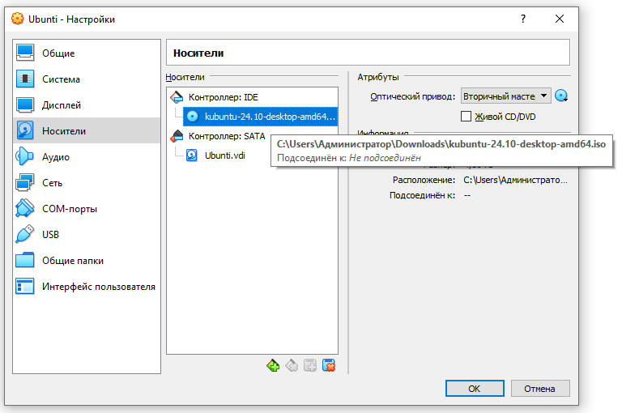
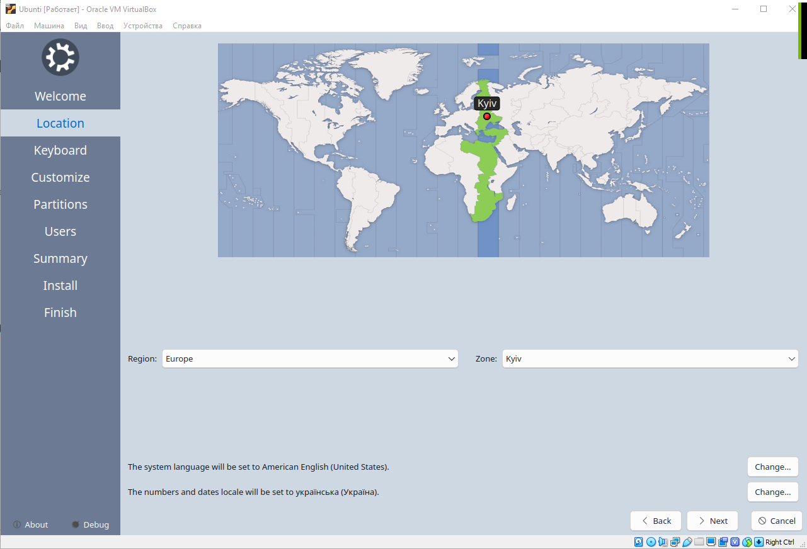
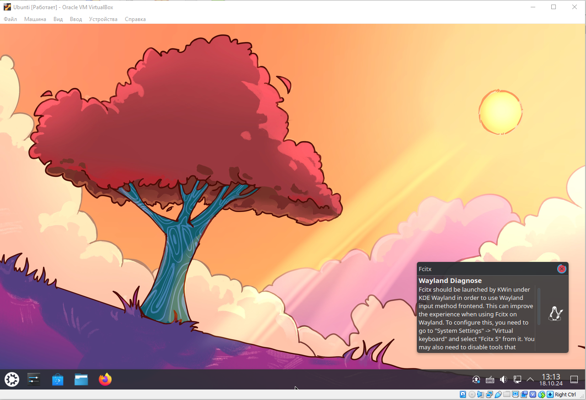

ЛР1: Вивчення можливостей технології віртуальних машин
У даній роботі ми розібралися з типами гіпервізорів, та встановили гіпервізор другого типу (Oracle VirtualBox 6.0), за допомогою якого ми встановили на хостову ОС Windows 10 гостьову ОС Kubuntu 24.10. У процесі роботи ми засвоїли навички як конфігурації самого гіпервізору, так і роботу з опціями інсталяції самої ОС Linux на прикладі Kubuntu 24.10.
Рис.1.1 – Встановлене ПЗ Oracle VirtualBox

Рис.4.1 – Шлях до дистрибутиву

Рис.4.5 – Інсталяція – часовий пояс

Рис.4.12 – KDE-Desktop користувача User